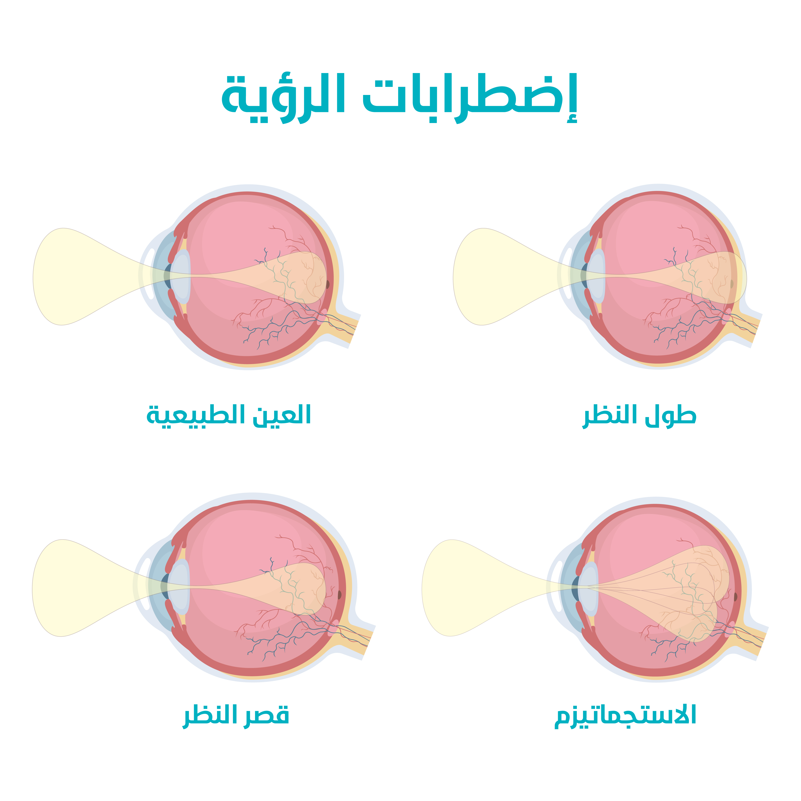
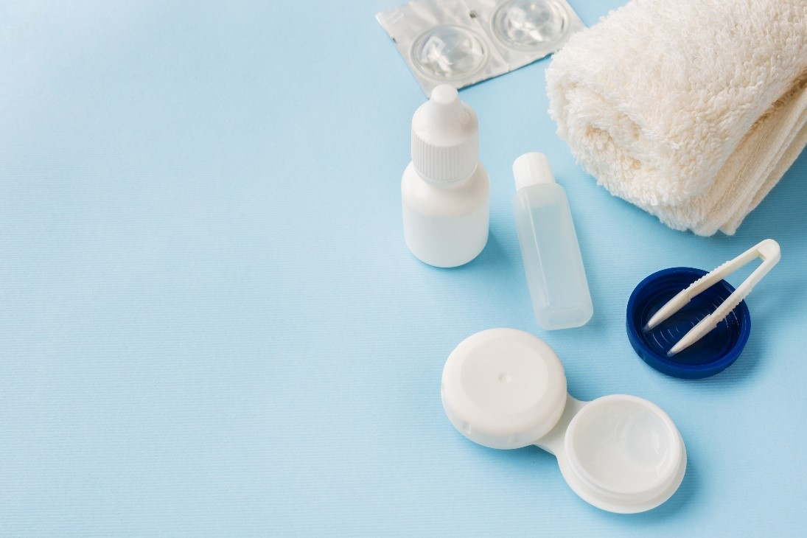

طب العيون في تركيا
يمكنكم الإطلاع على احدث التقنيات العلاجية في طب العيون في تركيا , تمتلك تركيا العديد من المستشفيات الطبية الحديث والتي تمتلك احدث الاجهزة الطبية والكوادر الطبية الخبيرة التي جعل من تركيا دولة مميزة في طب العيون

طرق علاج قصر النظر في تركيا وأحدث التقنيات
جدول المحتويات
ما هو قصر النظر؟
قصر النظر يصف حالة الخطأ الإنكساري في العين ، والذي يعني أن العين لا تعكس الضوء بشكل سليم ، والضوء لا يتركز بشكل صحيح ، مما يجعل الصور غير واضحة أو مشوشة ، وبقصر النظر تبدو الأشياء القريبة واضحة ، لكن الأشياء البعيدة تظهر بشكل مشوش ، وهي حالة شائعة.
بعض الأعراض والعلامات لقصر النظر تتضمن:
- إجهاد العين
- الصداع
- التحديق للرؤية بشكل صحيح
- صعوبة في رؤية الأشياء البعيدة ، مثل علامات الطريق أو لوح الصف في المدرسة.
هذه الأعراض تظهر بوضوح أكثر عند الأطفال مابين عمر 8 إلى 12 سنة.

أسباب قصر النظر
قصر النظر ربما يحدث بسبب زيادة طول مقلة العين عن الحالة الطبيعية ، أو أي حالة مرضية يمكن أن تمنع الأشعة الضوئية من التركيز على الشبكية ، ومثال على ذلك ، في حال كانت القرنية حادة أكثر من المعتاد ، ونتيجة لذلك فستتركز أشعة الضوء أمامية الشبكية بدل من الشبكية نفسها ، ووصول الضوء للشبكية ضروري للرؤية السليمة ، لكون الشبكية ترسل الصورة للعصب البصري ليتم تفسيرها بشكل صحيح.
وهناك عوامل قد تزيد من خطر حدوث قصر النظر:
- وجود تاريخ عائلي بقصر النظر.
- اظهرت بعض الدراسات أن النساء أكثر عرضة للإصابة به.
- المصابين بمرض شبكية العين.
- الأمراض الوراثية قد تزيد نسبة الإصابة به.
- ذكرت دراسات وجود علاقة بين كثرة القراءة وإستخدام الحاسوب وبين تطور قصر النظر.
طرق علاج قصر النظر في تركيا
يمكن تحسين النظر عبر إستخدام العدسات التصحيحية ، ويمكن التوجه للجراحة لتحسين دائم للرؤية لبعض أشكال قصر النظر ، على الرغم من أنه الفعالية والأمان لها على المدى البعيد جدا لم تثبت بشكل كامل بعد. ومن بين الطرق الجراحية:
بالبداية سيقوم الطبيب بتشخيص قصر النظر عبر فحص شامل للعين ، بالإضافة لفحص قياس حدة البصر عبر الطلب منكم قراءة أحرف على الرسم البياني ، وذلك كله بعد أخذ التاريخ الطبي والمرضي العائلي ، بناء على الحالة المرضية ومقدار الضعف ، وبالإضافة لطبيعة نمط الحياة سيقوم الطبيب بذكر العلاج المناسب لكم.
تقدم علاجك الطبية أحدث تقنيات تصحيح الإبصار للعيون ، وبيد أكثر الأطباء خبرة وإحترافية لضمان النجاح تام ورضى الراغبين بالعلاج في تركيا.
علاج قصر النظر باستخدام النظارات
النظارات هي الطريقة الأكثر شيوعاً لتصحيح الرؤية في قصر النظر ، وتعمل على إعادة تركيز أشعة الضوء على الشبكية بشكل صحيح ، بالإضافة يمكن للنظارات أن تحمي العين من الأشعة فوق البنفسجية الضارة. لكن من سلبيات النظارات:
- سهولة كسرها
- صعوبة ممارسة الرياضة عند إستخدامها.
- بالإضافة للحاجة للفحص الدوري و تغييرها سنوياً.
علاج قصر النظر بالليزر
تُستخدم أشعة ليزر خاصة تدعى بالليزر فوق البنفسجي ، لإعادة تشكيل القرنية بهدف تصحيح مشاكل النظر مثل القصر والإنحراف وذلك عبر إعادة تركيز الأشعة الضوئية على الشبكية ، وباستخدام الحاسوب يتم أخذ طوبوغرافيا القرنية ، ليقوم الجراح باستخدام الليزر بإعادة تصميم شكل القرنية بشكل عالي الدقة. ومن مزاياها:
- إمكانية علاج درجات شديدة من قصر النظر.
- سرعة فترة الشفاء.
- قلة الألم بعد العملية.
- قد تشكل حل دائم لقصر النظر
- الحفاظ على الشكل الجمالي للوجه مقارنة باالنظارة.
- القدرة على ممارسة كافة أنواع الرياضة.
ويمكن عبر علاجك الطبية الإستغناء عن نظارتكم بشكل كامل ، حيث أصبح بإمكان جرّاحي العيون فتح القشرة الخارجية للقرنيّة ، باستخدام تكنولوجيا ليزر الفيمتوسيكند، وبدقّة عالية.
علاج قصر النظر بالعدسات
تعد العدسات الطبية اللاصقة حل وسطي للراغبين بتصحيح الرؤية دون اللجوء للعمل الجراحي ، وتعمل هذه العدسات على إسقاط الأشعة الضوئية بشكل صحيح على القرنية ، و تختلف أنواعها حسب طبيعة المادة المصنعة وقدرتها على إنفاذ الأوكجسين بالإضافة لقدرتها على حماية العين من الأشعة فوق البنفسجية.
تتميز هذه العدسات عن النظارات:
- كونها تسمح لممارسة بعض أنواع الرياضة دون خوف.
- بالحفاظ على شكل الوجه دون تغطية جزء منه.
- مرونة أكثر في التعامل مع مختلف درجات قصر النظر ، وإمكانية دمج أنواع مختلفة من العدسات.
وتتميز عن العمل الجراحي:
- كونها أكثر أماناً.
- قلة التكلفة.
- يستغرق العمل الجراحي و الإستعداد له فترة أطول.
ومن مساوئ العدسات:
- أكثر صعوبة في تركيبها من النظارة ، وقد تحتاج لمختص لوضع لزرع بعض أنواع العدسات. وتوفر علاجك الطبية خدمة زراعة العدسات بيد الخبراء ، وعبر إستخدام التقنيات الحديثة الآمنة.
- أٌقل أماناً من النظارة ، في حال عدم الإهتمام بسلامة و نظافة العدسة ، وتستلزم جهداَ وأدوات أكثر للعناية بها.
- بحاجة لفحص دوري وتغيير كل 6 إلى 12 شهراً.
أفضل طرق علاج قصر النظر عند الاطفال
ينصح بعمل الفحص العيني على الأطفال تحت سن الخامسة للكشف عن أمراض العين ، ومن بينها مايدعى الكسل العيني و الحَوَل وقصر النظر والإنحراف ، ويختلف الأطفال عن الكبار في العمر كون عيونهم مازالت قيد النمو ، وذلك حتى سن 18 ، وقد تتغير بعد إجراء العملية الجراحية ، مما قد يستدعي إجراء العملية من جديد وهذا الخيار غير متاح في بعض الحالات أو العودة إلى النظارات الطبية ، لذا ينصح بعدم اللجوء للعملية الجراحية قبل سن 21 عام ، حتى يثبت قصر النظر لديهم دون تغييرات كبيرة ، وتعد النظارات الطبية الأكثر شيوعا لتحسين الرؤية لدى الأطفال.
ويمكن إستعمال العدسات اللاصقة للأطفال ، وذلك عند عمر معين مرتبط بنوع العدسة ، ومن بين طرق المعالجة للأطفال بالإضافة للنظارات:
- قطر الأتروبين ذات الجرعة المنخفضة(0.01%): وهي طريقة فعالة في إيقاف تطور الحالة في قصر النظر لدى الأطفال والمراهقين ، وتستخدم لمدة 2 إلى 3 سنوات للأطفال من 5 إلى 18 عاماً ، ولا يعرف الأطباء بالتحديد طريقة عملها ، لكن يعتقد أنها تقي العين من زيادة الطول والذي يعد السبب الرئيسي لقصر النظر ، وتستخدم هذه القطرات يوميا قبل النوم ، ومن تأثيراتها الجانبية أنها قد تسبب حكة أو إحمرار.
- العدسات اللاصقة المؤثرة على الرؤية الجانبية:
يتم ارتداء هذه العدسات اللاصقة الخاصة من قبل الأطفال الذين تتراوح أعمارهم بين 6-12 سنة الذين يعانون من قصر النظر ، وهي مصنوعة من مادة هلامية مائية ، وهذه العدسة اللاصقة "متعددة البؤر" لها مجالات تركيز مختلفة. حيث يعمل مركزها على تحسين الرؤية البعيدة ، بينما يعمل محيطها على تشتيت الرؤية الجانبية ، ويعتقد أن ذلك سياعد على إبطاء نمو العين مما يحد من قصر النظر.
قد لا تساعد هذه العدسات على علاج جميع حالات قصر النظر ، لكن من الواضح دورها في علاج العديد منها ، ومن بينهم الأطفال الذين تزداد الحالة لديهم سوءاً.
ومثل أي عدسات لاصقة أخرى ، هناك مخاطر من تلوث هذه العدسات ، لذا يجب الحرص على إرتداء الأطفال لهذه العدسات بشكل سليم وتنظيفها والحفاظ عليها لتجنب أي عدوى للعين.
أفضل طرق علاج قصر النظر عند الكبار
تتنوع طرق العلاج عند الكبار مابين إستخدام النظارات الطبية والعدسات اللاصقة والعمليات الجراحية ، ويعود للطبيب إختيار الأنسب ، وذلك بعد القيام بالتشخيص المناسب ومعرفة نمط حياة المريض ، وتختلف العمليات الجراحية عن بعضها من ناحية مقدار التدخل الجراحي وشدة التأثير على جفاف العين و مدى الدقة وسرعة الشفاء.
تعرَّف على عمليات تصحيح النظر بـالليزر وعمليات سمايل والفيمتو ليزك مع علاجك الطبية
أفضل طرق علاج قصر النظر عند البالغين
بعد القيام بالتشخيص الطبي المناسب والإطلاع على التاريخ المرضي والعائلي ، يقوم الطبيب بنصح المريض بالعلاجات الممكنة ، وإمكانية إجراء العملية الجراحية حسب مدى قصر النظر وحاجة المريض لتغير نمط حياته ، لكن ليس كل البالغين مؤهلين لهذه العمليات ، فالأشخاص الذين مابين عمر 18 إلى 21 مازالت الرؤية لديهم غير ثابتة ، ولذا ينصح بعدم القيام بالعملية لما بعد عمر 21 سنة.
وتوفر علاجك الطبية خدمة الإستقبال من المطار وبوجود مترجم مرافق ، بالإضافة للخدمات الطبية المتكاملة قبل العلاج وبعده، شاملةً برامج السياحة الطبية و الاستشارات المجانية.
أسئلة شائعة حول علاج قصر النظر
قد أظهرت العديد من الدراسات لبعض المواد النباتية آثار إيجابية ، بما في ذلك تحسين في تشوهات الشبكية ، زيادة مقاومة الشعيرات الدموية في العين ، تباطؤ تطور عتامة العدسة وقصر النظر ، ومن بين تلك النباتات العنبية الآسية والزعفران الذي يحوي على مضاد الأكسدة الكيروستين.
تستغرق العملية تقريبا 30 دقيقة ، ويستلزم التعافي مابعد العملية 6 ساعات ، خلالها يجب تجنب الأضوية الساطعة وإبقاء الأعين مغلقة ، و مدة 24 ساعة حتى يمكن القراءة ومشاهدة التلفاز ، ومدة شهر حتى السماح بمارسة كافة النشاطات السابقة.
لا ، لكن يعتقد أن دور الحجامة في تحسين الرؤية يرتبط بقدرة الحجامة على تحسين الدورة الدموية للعين وإزالة السموم.
لا ، لا يمكن علاج قصر النظر عند الأطفال بالأعشاب ، لكن يمكن لبعض الأعشاب الطبية أن تستخدم في علاج الإلتهابات في العين ، والتي قد تؤثر على الرؤية السليمة.
لا ، لا يمكن علاج قصر النظر بالعسل ، يساعد العسل في علاج الإلتهابات العينية والتي ترتبط بالرؤية ، بالإضافة لإحتوائه على المواد المغذية لشبكية العين.
لا ، لا يمكن علاج قصر النظر بالتمارين ، الجدير بالذكر أن تخفيف الوزن عبر التمارين الرياضية له دور في الحد من الأمراض العينية وأعراضها المرتبطة بداء السكري.
نعم ، يمكن تحسين الرؤية عبر إستخدام النظارات والعدسات الطبية ، لكنها ليست حل دائم ، ويجب تغييرها بإستمرار ، بالإضافة أنها تحد من قدرة المصاب على القيام بالنشاطات الرياضية ، لذا يميل الكثير للجوء للعمليات الجراحية خاصة مع تقدم التقنيات الحديثة التي تقلل من أي أضرار جانبية أو مخاطر ممكنة.
تحرير: علاجك الطبية©

المصادر
اطلع على أحدث المنشورات والأخبار الطبية
عمليات شفط الدهون بالفيزر في تركيا والأسعار 2021
يعتبر شفط الدهون بالفيزر من أفضل عمليات علاج السمنة المفرطة. تعرف معنا على مميزات وعيوب شفط الدهون بالفيزر وكيف تتم العملية وشاهد الفرق قبل وبعد في تركيا.
طرق علاج طول النظر في تركيا وأحدث التقنيات
يعاني الكثير من كبار السن وحتى البالغين من مرض طول النظر . سنتحدث في هذا المقال عن كيفية علاج طول النظر وأسباب هذا المرض ونسبة نجاح العلاج .
الفرق بين زراعة الشعر في ايران وتركيا 2021
بالرغم من أن أسعار زراعة الشعر بين تركيا وايران لا تختلف كثيرا إلا أن هنالك الكثير من الفروق التي قد تحدد لك الدولة الأفضل لزراعة الشعر فيها.
طرق علاج قصر النظر في تركيا وأحدث التقنيات
يعاني الكثير من الأطفال وحتى البالغين من مرض قصر النظر. سنتعرف في هذا المقال على أفضل طرق علاج قصر النظر وأسباب هذا المرض ونسبة نجاح العلاج .